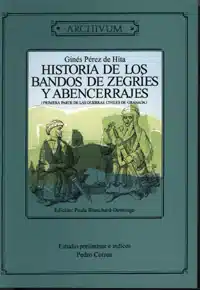
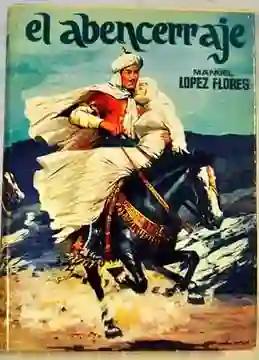
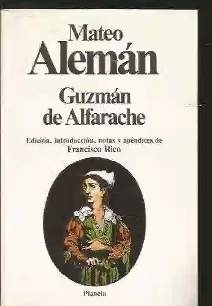

La novela morisca es un subgénero literario que floreció en la España del siglo XVI. Se caracteriza por presentar historias de amor entre personajes moros y cristianos, ambientadas en la época de la Reconquista. Estas obras idealizan la cultura morisca, presentando a sus protagonistas como caballeros valientes, damas hermosas y poetas talentosos.
☪️Las novelas moriscas giran en torno a personajes musulmanes, a menudo de la nobleza granadina.
☪️Se presenta una visión idílica de la sociedad morisca, destacando su belleza, su refinamiento y su caballerosidad.
☪️El amor entre moros y cristianos es un tema central, a menudo marcado por obstáculos y dificultades debido a la diferencia de religión./p>
☪️Las novelas se desarrollan en la época de la Reconquista, con el trasfondo de las luchas entre moros y cristianos.
☪️Se aprecian elementos propios de la novela de caballería, como el código de honor, el amor cortés y las aventuras caballerescas.
| Nombre de la obra y Año de publicación | Autor | De qué trata | Imagen |
|---|---|---|---|
| Historia de los Abencerrajes y Zegríes (1596) | Ginés Pérez de Hita | La novela explora temas como el honor, la lealtad, el amor y la venganza, en un marco histórico de gran tensión. La historia se entrelaza con un amor trágico entre Abindarráz, un Abencerraje, y Jarifa, una Zegrí. |  |
| El Abencerraje (1565) | Anónimo (atribuido a Mateo Alemán) | La obra destaca por su lirismo y su idealización del amor entre moros y cristianos. Narra la historia de Abindarráz, un joven caballero Abencerraje, que se enamora de Fátima, una bella cautiva cristiana. Su amor se ve obstaculizado por las diferencias religiosas y las intrigas políticas. |  |
| Guzmán de Alfarache (1599) | Mateo Alemán | La novela explora los temas del amor, la religión, la diferencia social y la supervivencia en un contexto de tensiones entre moros y cristianos. Incluye la historia intercalada "Historia de los dos enamorados Ozmín y Daraja". |  |
https://lacuevademontesinos.wordpress.com/2019/12/01/la-novela-morisca/
https://www.lifeder.com/novela-morisca/
https://www.candelavizcaino.es/literatura/novela-morisca.html#google_vignette